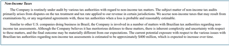
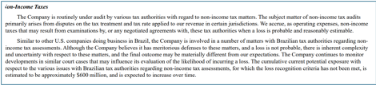
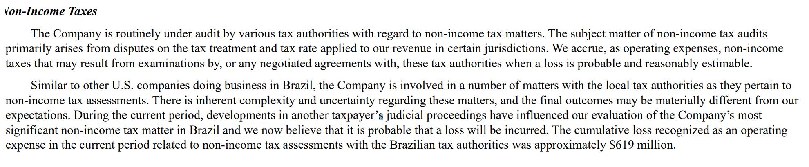
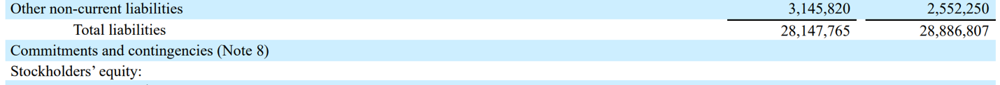

—Written by Chris McFarland
October 23, 2025
Commentary last added on N/A
Introduction:
Earnings season for Q3 of 2025 is fully underway, with some investors getting treats and others getting tricked. Investors of Netflix were unpleasantly surprised on October 21 when Netflix had to recognize a loss in its cost of revenue due to a one-time tax on its Brazilian assets. Now, to be clear, Netflix did nothing illegal with the way they reported this loss contingency in prior financial statements. The purpose of this article is not to advocate for any change to accounting standards in the US, but to commend US GAAP for its guidance on the complex and rather impactful topic of loss contingencies.
GAAP Background
First off, because this tax was not an income tax, Netflix’s accounting team had to follow guidance on loss contingencies rather than reporting for income taxes, which has a different threshold for recognizing changes in tax positions (Spiceland, et al., 2023).
ASC 450-20-25 tells us that the two major dimensions of loss contingencies are (1) the likelihood of the loss, and (2) the ability to estimate the financial effect of the loss. The accounting standard states that when a future loss is considered to be probable and the value of that loss is at least reasonably estimable, a liability should be accrued with an accompanying disclosure note describing the nature of the loss as well as other relevant information. In the case of a future loss that has a remote chance of happening, no entry or disclosure note is required. Finally, all other loss contingencies that fall in the middle of these two categories should be disclosed in the company’s financial statements. Companies should describe the nature of the contingency and give an estimate of the loss, even in the form of a range, if possible.
Netflix's Accounting Treatment:
The reason this accounting standard is so strong, in my opinion, is that it protects risk-averse, informed investors while maintaining flexibility in its definition of measurement. In the recent case of Netflix, in their Form 10-K for their fiscal year 2024, Netflix disclosed the following:

As we see in this disclosure, Netflix delivers a brief description under Note 8: Commitments and Contingencies of their exposure to the uncertain changes happening in Brazil’s regulatory environment. They therefore provide all of the key metrics of future cash flows, with the exception of timing. In this case, perhaps Netflix could have assigned a particular timeframe that they would have expected a decision to be made by the Brazilian Supreme Court, or at least a more detailed lead-up of events surrounding the issue. Regardless, their disclosure without a doubt warned investors that a material hit to earnings was entirely possible in 2025 and would grow as time went on.
Half a year later, in Netflix’s Form 10-Q for the second quarter of 2025, they disclosed the following:

In this disclosure, the user of the financial statements is provided with an updated loss contingency estimate of which they were told would increase from the Form-10K. Additionally, they are given information on the assessment and judgment used by Netflix’s accounting team on their decision not to bump the loss contingency into the “probable” category. At this point, Netflix has given ample time for any risk-averse investor to hit the road and take their past winnings straight to the bank.
Finally, in the third quarter of 2025, Netflix disclosed a $619 million loss and recognized it as an expense in its current period cost of revenue line item of the income statement. With the decision made by the Brazilian Supreme Court on expanding the scope of Brazil’s ability to tax foreign transfers of assets. This made the loss no longer reasonably possible, but probable, and therefore a debit to equity was made with a corresponding credit to a liability. While the $619 million figure has not yet been paid by Netflix, it is what Netflix clearly expects to be charged, as they provide no other range of estimate in their note. Below is the disclosure from their Form 10-Q for the third quarter of 2025.

Conclusion:
It’s quite remarkable that a loss of this scale went from improbable to virtually certain in a couple of months. This is a rare occurrence, especially for a company as large and prominent as Netflix that most likely plans its tax positions many years out. Nonetheless, this is the nature of legal rulings, particularly those that occur outside of the US, where management may not fully grasp the regulatory culture or history of that nation because they grew up elsewhere.
This surprise serves as a good reminder of the importance accounting plays in the financial markets. While this trading week has been unfortunate for risk-tolerant investors who saw a 10% drop in the value of Netflix’s shares, I believe it highlighted the strength of ASC 450-20. The users of Netflix’s financial statements were properly referred to the note on the balance sheet and reminded that the notes to the financial statements are an integral part of the financial statements themselves. They were told the estimated amount of a future loss and the circumstances surrounding it, and were given updated estimates of the loss contingency even though, at the time, there was still an unlikely chance of the loss occurring. Below is the reference given in their Form 10-Q for the second quarter of 2025 (when the loss was still improbable).

The only significant piece of information that Netflix omitted from its notes was the fact that the full amount of the loss would be recognized in a single period rather than spread out across multiple periods. With that being said, they may not have been able to ascertain that information due to the sheer amount of uncertainty in the unique tax ruling by Brazil’s government. Nevertheless, accounting did its job by providing transparency and a reasonable framework for assessing losses, even as uncommon as the one Netflix has incurred this week.
Supporting Links:
Financial Accounting Standards Board Codification: https://asc.fasb.org/
CNBC Article on Netflix 2025 Third Quarter Earnings: https://www.cnbc.com/2025/10/21/netflix-nflx-earnings-q3-2025.html
Netflix Form 10-K for Fiscal Year 2024: https://s22.q4cdn.com/959853165/files/doc_financials/2024/ar/Netflix-10-K-01272025.pdf
Netflix Form 10-Q for the Second Quarter of Fiscal Year 2025: https://d18rn0p25nwr6d.cloudfront.net/CIK-0001065280/73e981bb-c856-4440-9586-4b46bd62c87c.pdf
Intermediate Accounting Textbook from McGraw-Hill: Spiceland, J. D., Nelson, M., Thomas, W., & Winchel, J. (2023). Intermediate accounting (11th ed.). McGraw-Hill LLC.
Commentary: